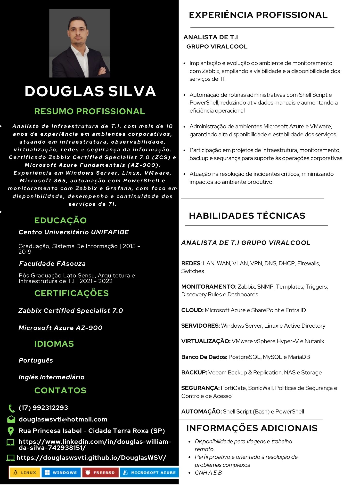

📄 Meu Currículo
Conheça minha experiência profissional, formação, certificações e principais competências em infraestrutura e tecnologia da informação.

Conheça minha experiência profissional, formação, certificações e principais competências em infraestrutura e tecnologia da informação.
